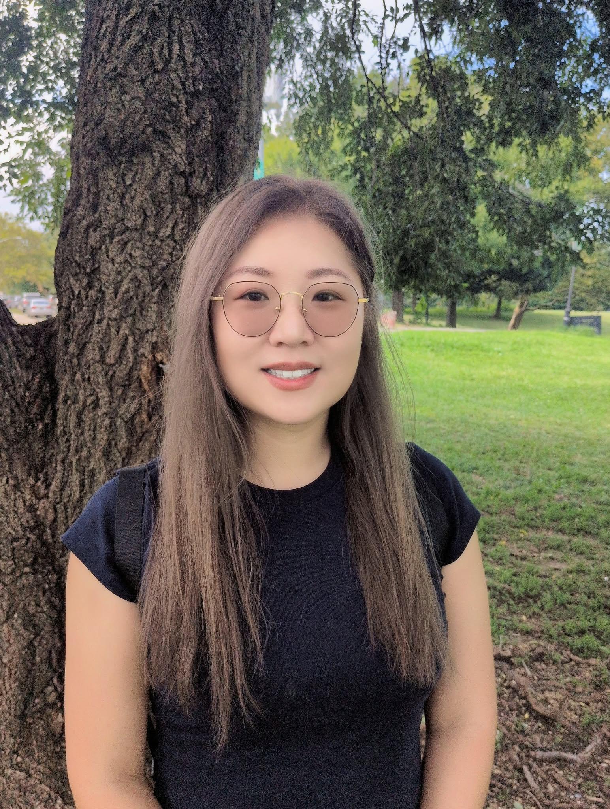

I am a PhD student at the NYU Silver School of Social Work. My background bridges empirical research in affective neuroscience with direct clinical social work in inpatient psychiatric settings.
My work focuses on leveraging human-centered technology and natural language processing (NLP) to promote mental health equity, understand cultural help-seeking behaviors, and inform ethically grounded social work practice.
Get in Touch*Note: Publications are indexed under my formal name, Xiaoran Liu.
Varadarajan, V., Mahwish, S., Liu, X., Buffolino, J., Luhmann, C., Boyd, R., & Schwartz, H. A. (2025). Capturing human cognitive styles with language: Towards an experimental evaluation paradigm. Proceedings of the 2025 Conference of the North American Chapter of the Association for Computational Linguistics (NAACL).
Varadarajan, V., Juhng, S., Mahwish, S., Liu, X., Luby, J., Luhmann, C., & Schwartz, H. A. (2023). Transfer and active learning for dissonance detection: Addressing the rare-class challenge. arXiv preprint.
Liu, X., & An, R. (2027). Understanding Asian American help-seeking through NLP towards culturally responsive suicide prevention. Abstract submitted to the Society for Social Work and Research (SSWR) 31st Annual Conference.
My professional background spans clinical social work in inpatient psychiatric units, computational research in natural language processing (NLP), and affective neuroscience.

Outside of research and clinical work, I love spending time outdoors, whether skiing, kayaking, camping, or hiking with my two poodles, Phoebe and Powder. I am also passionate about wildlife rehabilitation and local bird rescue, caring for my three resident birds at home: Hope, Happy, and Blue.
Interested in collaborating on computational social science or digital mental health equity?
Email Me© — Xiaoran (Livia) Liu